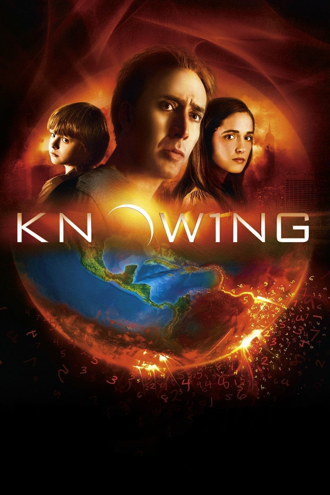

Мировая премьера: 20 марта 2009
Слоган: Что будет, когда закончатся числа?
Сюжет: На территории школы вскрывают капсулу времени с детскими рисунками, сделанными 50 лет назад. Один из них с поразительной точностью рассказывает о катаклизмах, произошедших за это время. Более того, в нём предсказываются ещё три события, одно из которых может стать катастрофой глобального масштаба. Пророческое послание попадает в руки астрофизика Джона Кестлера, и он разыскивает дочку девочки, сделавшей его. Смогут ли они убедить мир в приближении опасности? У них есть всего неделя. Время пошло!
Режиссёр: Алекс Пройас
В ролях: |
Николас Кейдж | Джон Кестлер |
| Роуз Бирн | Дайана Уэйланд | |
| Чандлер Кентербери | Калеб Кестлер | |
| Бен Мендельсон | Фил Бекман | |
| Лара Робинсон | Эбби Уэйланд / Люсинда Эмбри | |
| Надя Таунсенд | Грейс Кестлер | |
| Даниэль Картер | Мисс Присцилла Тейлор в 1959 | |
| Алетеа МакГрат | Мисс Присцилла Тейлор в 2009 | |
| Лиам Хемсворт | Спенсер |
Бюджет: $ 50 млн.
Кассовые сборы в США: $ 80 млн.
Кассовые сборы в мире: $ 184 млн.
Продолжительность: 1 ч. 56 мин.
Рейтинг: 6.2